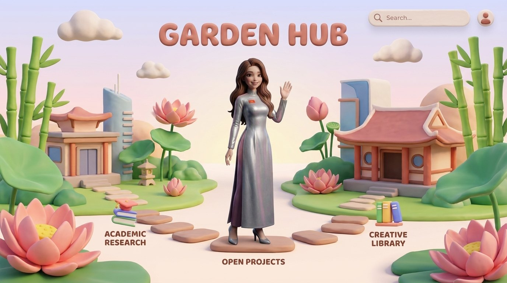

Chương 02 · Academic Hub
Nghiên cứu & Công bố
Quốc tế hóa và hiệu quả doanh nghiệp ở châu Á — 9 công bố 2020–2026, mạng lưới dữ liệu 50 nền kinh tế tỏa ra từ Cần Thơ.
Xem công bố →
Giảng viên · nghiên cứu sinh tiến sĩ Quản trị kinh doanh. Mỗi chương của trang là một chặng đường — và giữa các chương, cô Hương đạp xe đưa bạn sang trang mới.
Bắt đầu hành trình ↓Quốc tế hóa và hiệu quả doanh nghiệp ở châu Á — 9 công bố 2020–2026, mạng lưới dữ liệu 50 nền kinh tế tỏa ra từ Cần Thơ.
Xem công bố →
M-AIDA, BizOn, EnQuiz và bộ trò chơi giáo dục — bốn phần mềm mở có DOI, cùng khu vườn 3D nơi bạn tự cầm lái.
Ghé các dự án →
Album «Je m'appelle Hương» năm chương bảy bản thu, và bản tin Zenodo cập nhật từng cột mốc của hệ sinh thái.
Vào kho sáng tạo →